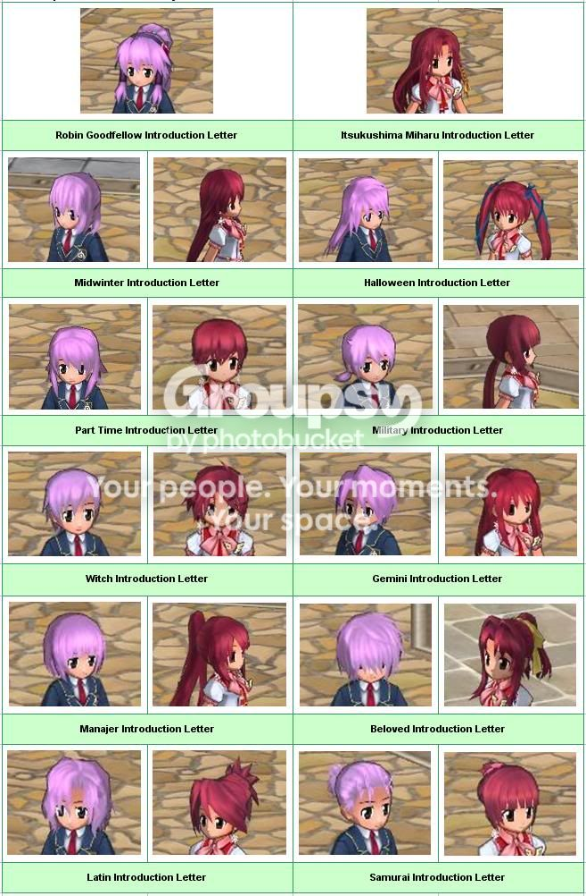

Re: ยินดีต้อนรับ สู่ ECO Indonesia
สวยแล้วเนอะ อิอิ (พึ่งเคยทำไฟล์ .gif)
http://eco.froztic.in.th/archive/ecofanclub/
http://eco.froztic.in.th/archive/ecofanclub/viewtopic.php?f=2&t=82725



xiahjunsu เขียน:https://eco.wavegame.net/news/show/372
ถือว่าคุ้มมาก ถ้าเทียบกับกล่อง SP
เพราะ แต่ละทรง 3m +
กำไรเห็นๆ เด้อพี่น้อง
จบข่าว


 (ไอเราก็ไม่อยากไปแก้ ต้นฉบับ)
(ไอเราก็ไม่อยากไปแก้ ต้นฉบับ)ผีชินจัง เขียน:ไม่ไร สมัครใจ ทำเอง
เหนื่อยมากกับกระทู้ไกด์ มันเหมือนน้ำท่วมอ่ะ
พอแก้รุปตรงนี้เสร็จ ตรงนั้นก็หายอีก
xiahjunsu เขียน:คริๆ สู้ๆ เด้อ